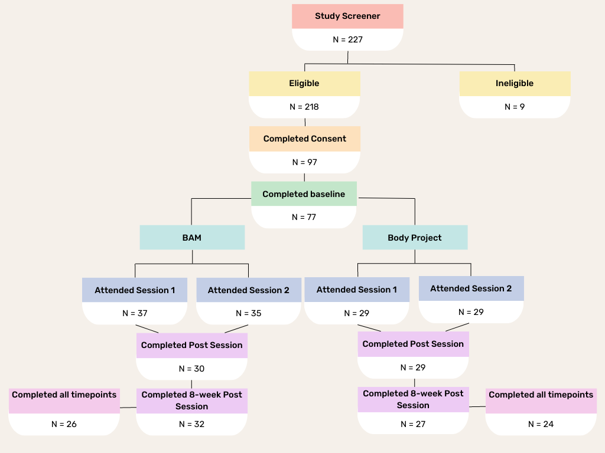

1 Sample Description
2 Sample Description
Participants (N = 66) were randomly assigned to either the BAM (N=37) or the Body Project (N=29) intervention. Of these, 29 attended the interventions virtually (BAM: N=14, BP: N= 15) beginning 10/20 and ending 02/22 due to the pandemic and 37 attended in-person sessions (BAM: N=24, BP: N=13) between 03/22 to 04/23. Participants ranged in age from 18 – 28 years with the average age being 21.23 years. Participants were mostly women (95.45%) and and the most commonly reported race was White (N = 75.76%). Furthermore, the majority of participants identified as heterosexual (69.7%) followed by bisexual (27.27%). At the time of the intervention, 64 participants reported being students. For a study flow diagram, see Figure 1.
| Demographics | BAM | Body Project | Total |
|---|---|---|---|
| n | 37 (56%) | 29 (44%) | 66 (100%) |
| Gender | |||
| Female | 36 (97.3%) | 27 (93.1%) | 63 (95.45%) |
| Male | 1 (2.7%) | 1 (3.45%) | 2 (3.03%) |
| Nonbinary | 0 (0%) | 1 (3.45%) | 1 (1.52%) |
| Mean Age | 21.05 | 21.46 | 21.23 |
| Race | |||
| White | 31 (83.78%) | 19 (65.52%) | 50 (75.76%) |
| Black | 0 (0%) | 2 (6.9%) | 2 (3.03%) |
| Asian | 5 (13.51%) | 7 (24.14%) | 12 (18.18%) |
| Native American | 0 (0%) | 1 (3.45%) | 1 (1.52%) |
| Hispanic/Latino | 0 (0%) | 0 (0%) | 0 (0%) |
| Pacific Islander | 1 (2.7%) | 0 (0%) | 1 (1.52%) |
| Sexuality | |||
| Heterosexual | 25 (67.57%) | 21 (72.41%) | 46 (69.70%) |
| Homosexual | 1 (2.7%) | 0 (0%) | 1 (1.52%) |
| Bisexual | 11 (29.73%) | 7 (24.14%) | 18 (27.27%) |
| Asexual | 0 (0%) | 1 (3.45%) | 1 (1.52%) |
Table 1: Demographics of participants at baseline.
